Accelerating Substructure Similarity Search for Formula Retrieval
Wei Zhong, Shaurya Rohatgi,
Jian Wu, C. Lee Giles and Richard Zanibbi.
Rochester Institute of Technology, Pennsylvania State University, Old Dominion University.
Mathematical Information Retrieval (MIR)
- Detect and extract math expressions from scientific document (e.g., PDF)
- Handwritten formulas and formula image recognition
- Formula retrieval and math-aware search
What is formula retrieval?
(*) Screenshot from Approach Zero math-aware search engine (https://approach0.xyz)
Problems in math similarity search
- Need a good "word" representation
- Identify sub-expression is important:
$$(1+\frac 1n)^n \qquad \text{vs.} \qquad 1 + (\frac 1n)^n \quad \text{and} \quad 1 + \frac 1n$$
- Not meaningful to count frequency w/o considering structure:
$$x+ \frac 12y \qquad \text{vs.} \qquad xy+\frac 12$$
- Symbols can be used interchangeably (e.g., $x^2+x$ and $a^2+a$)
- Need to consider alternative forms from the same formula
- ...... (list goes on)
Math representation (Tree-based)
graph TD;
add("ADD")
add --- a
add --- power
add --- frac
power --- base
power --- add2("ADD")
base --- b("b")
add2 --- 2("2")
add2 --- c("c")
frac --- rank1
rank1 --- 1
frac --- rank2
rank2 --- x
Operator tree
$a+b^{2+c} + \frac 1 x$ in two different tree representations
K. Davila, R. Zanibbi. "Layout and Semantics: Combining Representations for Mathematical Formula Search". In Proceedings of the 40th International ACM SIGIR conference on Research and Development in Information Retrieval (SIGIR 2017). ACM.
Similarity measurement
graph TD;
add("ADD")
group("GROUP")
add --- group
group --- add2
add2("ADD")
add2 --- a("a")
add2 --- times1("TIMES")
times1 --- b("b")
times1 --- c("c")
add --- times2("TIMES")
times2 --- x("x")
times2 --- y("y")
style add2 stroke:#080,stroke-width:8px
style times1 stroke:#080,stroke-width:8px
style b stroke:#080,stroke-width:8px
style a stroke:#080,stroke-width:8px
style c stroke:#080,stroke-width:8px
style times2 stroke:#800,stroke-width:8px
style x stroke:#800,stroke-width:8px
style y stroke:#800,stroke-width:8px
linkStyle 2 stroke:#080,stroke-width:8px;
linkStyle 3 stroke:#080,stroke-width:8px;
linkStyle 4 stroke:#080,stroke-width:8px;
linkStyle 5 stroke:#080,stroke-width:8px;
linkStyle 7 stroke:#800,stroke-width:8px;
linkStyle 8 stroke:#800,stroke-width:8px;
Query:
$ (a+bc)+xy $
graph TD;
add("ADD")
add --- a("a")
add --- times1("TIMES")
times1 --- b("b")
times1 --- c("c")
add --- times2("TIMES")
times2 --- x("x")
times2 --- y("y")
style add stroke:#080,stroke-width:8px
style times1 stroke:#080,stroke-width:8px
style a stroke:#080,stroke-width:8px
style b stroke:#080,stroke-width:8px
style c stroke:#080,stroke-width:8px
linkStyle 0 stroke:#080,stroke-width:8px;
linkStyle 1 stroke:#080,stroke-width:8px;
linkStyle 2 stroke:#080,stroke-width:8px;
linkStyle 3 stroke:#080,stroke-width:8px;
style times2 stroke:#800,stroke-width:8px
style x stroke:#800,stroke-width:8px
style y stroke:#800,stroke-width:8px
linkStyle 5 stroke:#800,stroke-width:8px;
linkStyle 6 stroke:#800,stroke-width:8px;
Candidate: $ a+bc+xy $
Common formula forest $\pi$ (highlighted in two colors)
Scoring: $\gamma(\pi) = \sum_{T_q, T_d \in \pi} \beta_i (\alpha \cdot \text{operators}(T_d) + (1 - \alpha) \text{leaves}(T_d))$
($\alpha, \beta$ are parameters, $T_q, T_d$ are trees from query and document)
Query:
$r_{xy}=\frac{{\color{Maroon}\sum} _{{\color{Maroon}i}={\color{Maroon}1}}^{{\color{Maroon}n}}({\color{Maroon}x}_{{\color{Maroon}i}}-\bar{{\color{Maroon}x}})({\color{Maroon}y}_{{\color{Maroon}i}}-\bar{{\color{Maroon}y}})}{(n-1)s_{x}s_{y}}=\frac{{\color{Orange}\sum} _{{\color{Orange}i}={\color{Orange}1}}^{{\color{Orange}n}}(x_{i}-\bar{x})(y_{i}-\bar{y})}{\sqrt{{\color{Green}\sum} _{{\color{Green}i}={\color{Green}1}}^{{\color{Green}n}}({\color{Green}x}_{{\color{Green}i}}-\bar{{\color{Green}x}})^{{\color{Green}2}}\sum _{i=1}^{n}(y_{i}-\bar{y})^{2}}}$
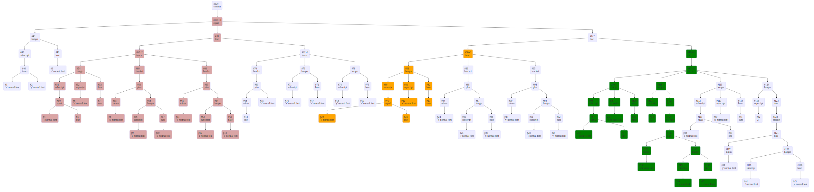
Document formula:
$r=\frac{{\color{Maroon}\sum}^{{\color{Maroon}N}}_{{\color{Maroon}i}={\color{Maroon}1}}({\color{Maroon}X}_{{\color{Maroon}i}}-\bar{{\color{Maroon}X}})({\color{Maroon}Y}_{{\color{Maroon}i}}-\bar{{\color{Maroon}Y}})}{\sqrt{{\color{Green}\sum}^{{\color{Green}N}}_{{\color{Green}i}={\color{Green}1}}({\color{Green}X}_{{\color{Green}i}}-\bar{{\color{Green}X}})^{{\color{Green}2}}}\sqrt{{\color{Orange}\sum}^{{\color{Orange}N}}_{{\color{Orange}i}={\color{Orange}1}}(Y_{i}-\bar{Y})^{2}}}$
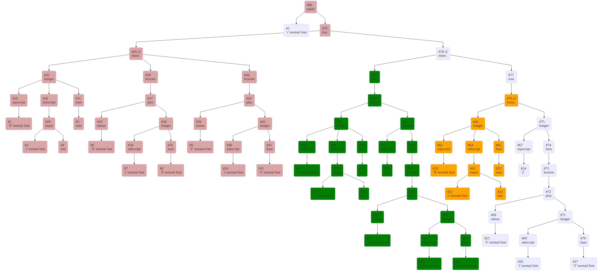
Query:
$r_{xy}=\frac{{\color{Maroon}\sum} _{{\color{Maroon}i}={\color{Maroon}1}}^{{\color{Maroon}n}}({\color{Maroon}x}_{{\color{Maroon}i}}-\bar{{\color{Maroon}x}})({\color{Maroon}y}_{{\color{Maroon}i}}-\bar{{\color{Maroon}y}})}{(n-1)s_{x}s_{y}}=\frac{{\color{Orange}\sum} _{{\color{Orange}i}={\color{Orange}1}}^{{\color{Orange}n}}(x_{i}-\bar{x})(y_{i}-\bar{y})}{\sqrt{{\color{Green}\sum} _{{\color{Green}i}={\color{Green}1}}^{{\color{Green}n}}({\color{Green}x}_{{\color{Green}i}}-\bar{{\color{Green}x}})^{{\color{Green}2}}\sum _{i=1}^{n}(y_{i}-\bar{y})^{2}}}$
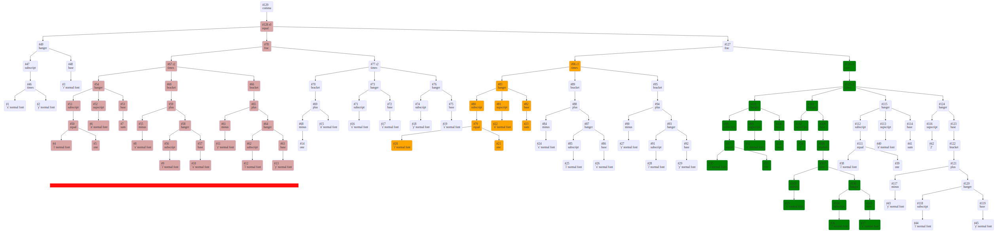
Document formula:
$r=\frac{{\color{Maroon}\sum}^{{\color{Maroon}N}}_{{\color{Maroon}i}={\color{Maroon}1}}({\color{Maroon}X}_{{\color{Maroon}i}}-\bar{{\color{Maroon}X}})({\color{Maroon}Y}_{{\color{Maroon}i}}-\bar{{\color{Maroon}Y}})}{\sqrt{{\color{Green}\sum}^{{\color{Green}N}}_{{\color{Green}i}={\color{Green}1}}({\color{Green}X}_{{\color{Green}i}}-\bar{{\color{Green}X}})^{{\color{Green}2}}}\sqrt{{\color{Orange}\sum}^{{\color{Orange}N}}_{{\color{Orange}i}={\color{Orange}1}}(Y_{i}-\bar{Y})^{2}}}$
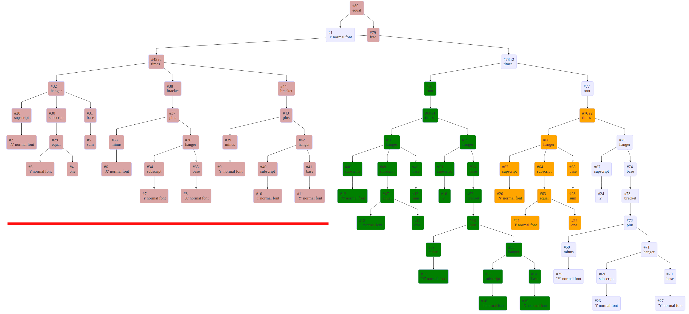
Matching from leaf-root paths
graph TD;
add2("ADD")
add2 --- a("a")
add2 --- times1("TIMES")
times1 --- b("b")
times1 --- c("c")
linkStyle 0 stroke:#080,stroke-width:8px;
linkStyle 1 stroke:#00e,stroke-width:9px;
linkStyle 2 stroke:#00e,stroke-width:9px;
linkStyle 3 stroke:#800,stroke-width:8px;
Query: $ a+bc $
graph TD;
add("ADD")
add --- a("a")
add --- times1("TIMES")
times1 --- b("b")
times1 --- c("c")
add --- times2("TIMES")
times2 --- x("x")
times2 --- y("y")
linkStyle 0 stroke:#080,stroke-width:8px;
linkStyle 1 stroke:#00e,stroke-width:9px;
linkStyle 2 stroke:#00e,stroke-width:9px;
linkStyle 3 stroke:#800,stroke-width:8px;
Candidate: $ a+bc+xy $
Assumption: leaf-root paths match $\implies$ corresponding structure aligned
Then the matched paths from two expressions is simply: $1 + \min(2, 4) = 3$
Path-based inverted index
- Use prefix leaf-root paths from operator tree
- Index (by ExpID) and retrieve formulas on an inverted index
- "Recover" structure by grouping root-end node IDs
- Calculate similarity score $\gamma(\pi)$
Ref: Zhong, Wei, and Richard Zanibbi. "Structural similarity search for formulas using leaf-root paths in operator subtrees." ECIR 2019
Query and inverted list length
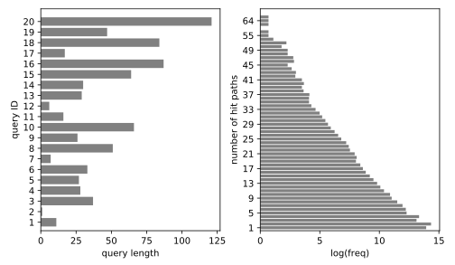
(*) Evaluating queries are from NTCIR-12 Wiki-browsing dataset.
Formula search requires extensive "words" to carry structure information.
Dynamic pruning
- Dynamic pruning speeds up query by skipping documents unlikely to be ranked in top-K results
- Assume top K at a given point is threshold $\theta$. Any hit cannot appear in the final top-K if its upperbound $\le \theta$
- In MaxScore [1-3], if a set of posting lists have upperbound $\le \theta$, then they can be advanced directly to candidate docID. They are called non-requirement set.
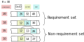
[1] Turtle, Howard, and James Flood. "Query evaluation: strategies and optimizations." Information Processing & Management 1995
[2] Strohman, Trevor, Howard Turtle, and W. Bruce Croft. "Optimization strategies for complex queries." SIGIR 2005.
[3] Jonassen, Simon, and Svein Erik Bratsberg. "Efficient compressed inverted index skipping for disjunctive text-queries." ECIR 2011.
Model the path matching
The number of matched leaves for $m \in T _ { q } , n \in T _ { d }$ is
$$
\sum _ { t \in \mathfrak { T } ( m ) } \operatorname { min } ( | Q _ { t } ^ { ( m ) } | , | D _ { t } ^ { ( n ) } | )
$$
If $m, n$ are the top roots, then $\mathfrak { T } ( m ) = $ { /VAR/TIMES/ADD, /VAR/ADD }.
The matched paths is simply $\min(2, 2) + \min(2, 1) = 3$.
Path posting list upperbound
- Simplify the similarity measurement, only score by the width of the widest common tree
$$
w^*_{Q, D} = \max_{m\in T_q, n \in T_d} \sum _ { t \in \mathfrak { T } ( m ) } \operatorname { min } ( | Q _ { t } ^ { ( m ) } | , | D _ { t } ^ { ( n ) } | )
$$
- Let $w_{m, t} = |Q_t^{(m)}|$, then $w_{m, t} \ge \min(|Q_t^{(m)}|, |D_t^{(n)}|)$
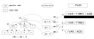
Requirement set selection (MaxRef)
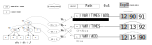
One possible upperbound is $\text{MaxRef}_t = \max_m \; w_{m, t}$
Requirement set selection (GBP)
Alternatively, directly find a "largest" set of non-requirement set that satisfies the constraints $\le \theta$, this is essentially solving a binary programming problem.
- Maximize the number of posting lists in requirement set:
$$
\text{max} \qquad 1^\top \mathbf{x} \qquad s.t. \quad \mathbf{W} \mathbf{x} \le \theta \\
$$
- Maximize the total length ($\sum_i L_i$) of posting lists in requirement set:
$$
\text{max} \qquad [L_1, L_2, ...] \;\mathbf{x} \qquad s.t. \quad \mathbf{W} \mathbf{x} \le \theta \\
$$
Since binary programming problem is hard, we just greedily follow one branch of the binary programming sub-problems to obtain a feasible (but may not be optimal) solution.
Indices and substructure scoring (1)
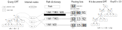
Each posting list entry has expID, document root-end node IDs,
and the number of paths of corresponding root-end node.
Indices and substructure scoring (2)
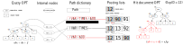
Document expression #12 has a subexpression rooted at $d4$,
which has leaf-root paths /VAR/TIMES/ADD and /VAR/ADDS,
each indexes the corresponding "root/#paths" information.
Indices and substructure scoring (3)
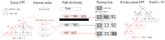
The maximum matched sub-expression rooted at $d4$ from document expression (#12)
is query expression $q1$, which has a total of $ \min(5,2) + \min(1,2) = 3$ common leaves.
Posting list dropout
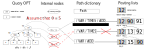
Some of the posting lists (iterators) may be dropped due to zero reference.
(Different from traditional MaxScore, not all hit posting lists are contributing here)
Final score
The "structure score" is simply the width of maximum matched common tree.
$$
w^*_{Q, D} = \max_{m\in T_q, n \in T_d} \sum _ { t \in \mathfrak { T } ( m ) } \operatorname { min } ( | Q _ { t } ^ { ( m ) } | , | D _ { t } ^ { ( n ) } | )
$$
The overall score [1] further captures symbol similarity (e.g., to discern
$E=mc^2$ vs. $y=ax^2$) and penalizes large formulas.
$$
u ( w^* ) = \frac { w^* } { | \operatorname { leaves } ( T _ { q } ) | + w^* } \left[ ( 1 - \eta ) + \eta \frac { 1 } { \operatorname { log } ( 1 + n _ { d } ) } \right]
$$
where $\eta = 0.05, n_d = 1$.
[1]: Zhong, Wei, and Richard Zanibbi. "Structural similarity search for formulas using leaf-root paths in operator subtrees." ECIR 2019
Evaluation
- 2016 NTCIR-12 dataset [1] of 590,000 formulas from English Wikipedia, including 20 non-wildcards queries.
- Math StackExchange (MSE) corpus with over 1 million Q&A threads.
- The resulting uncompressed index size for NTCIR-12 and MSE are ~2GB and ~16GB in size.
- We investigate different $K$ values: 100, 200 and 1000. A baseline with $K=100$ without pruning is also compared.
- Bpref [2] scores are compared among systems for effectiveness. Efficiency is evaluated by query run times statistics of 5 independent runs.
[1]: Zanibbi, Richard, Akiko Aizawa, and Michael Kohlhase. “NTCIR-12 MathIR Task Overview,”
[2]: Buckley, Chris, and Ellen M. Voorhees. "Retrieval evaluation with incomplete information." ACM SIGIR 2004.
Performance of different strategies
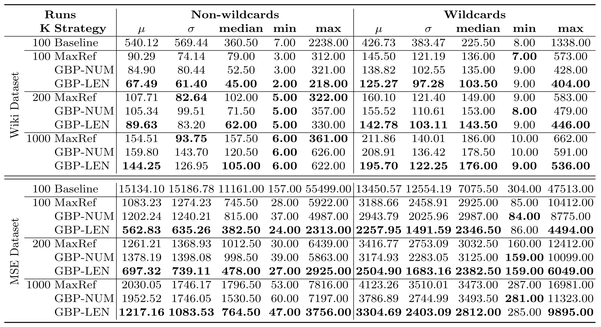
Performance of different strategies (Cont.)
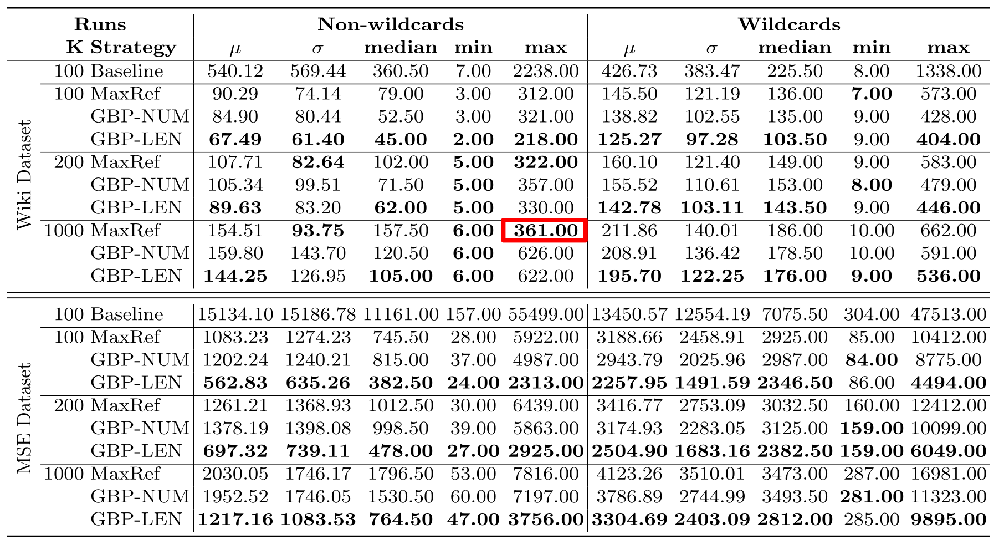
Effectiveness
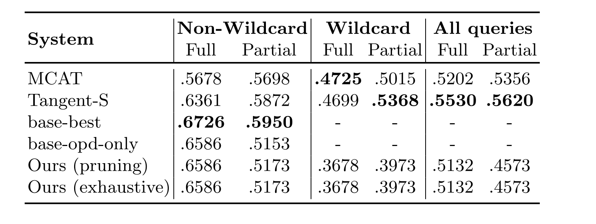
Compared with most effective from NTCIR-12 (MCAT and Tangent-S), and our previous system w/o pruning (base-$*$), we still obtain very effective full relevance results (also being rank-safe), but overall effectiveness is skewed by wildcards queries.
[mcat] Kristianto, Giovanni Yoko, Goran Topic, and Akiko Aizawa. "MCAT Math Retrieval System for NTCIR-12 MathIR Task." NTCIR. 2016.
[Tangent-S] Zanibbi, Richard, et al. "Multi-stage math formula search: Using appearance-based similarity metrics at scale." ACM SIGIR 2016.
[base-*] Zhong, Wei, and Richard Zanibbi. "Structural similarity search for formulas using leaf-root paths in operator subtrees." ECIR 2019
Efficiency compared to other systems
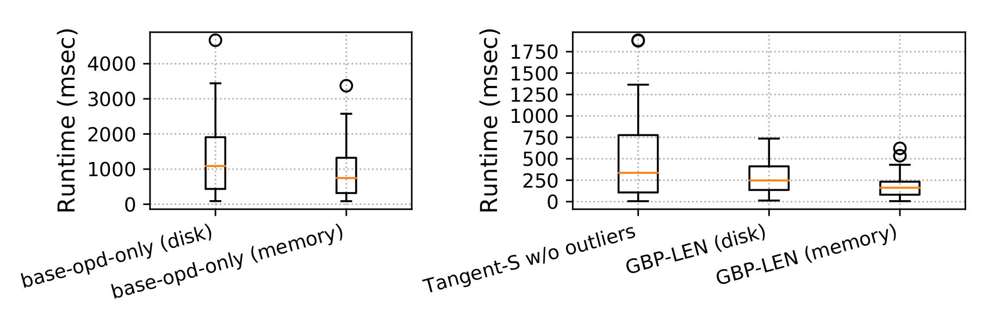
Our best performant strategy GBP-LEN stands out when compared
among other effective math formula retrieval systems.
Notes
(1) MCAT is not included here, it reportedly has a median query execution time around 25 seconds
(2) Baseline system opd-only is selected here because it is the most efficient run
(3) Text-based systems in NTCIR-12 such as the MIaS system from Masaryk University in general is 2~5 times worse effective than systems compared here.
Appendix - Formula Search algorithm
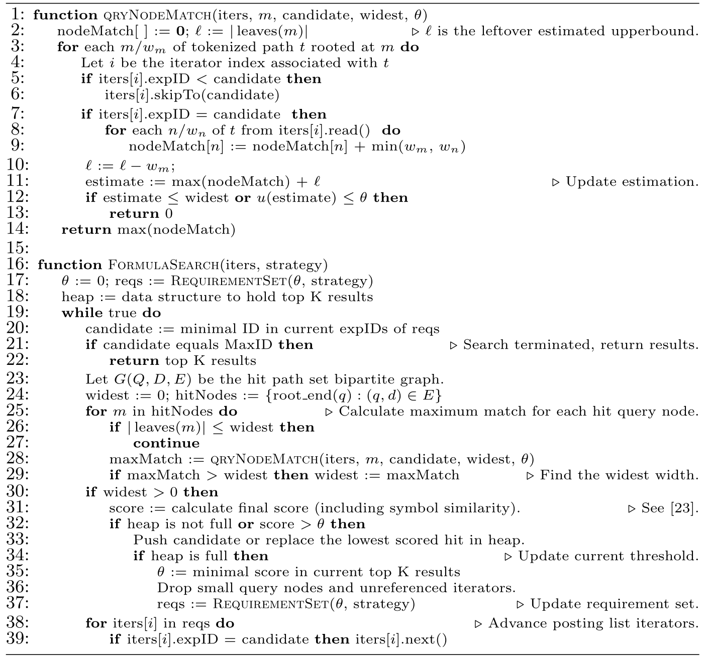